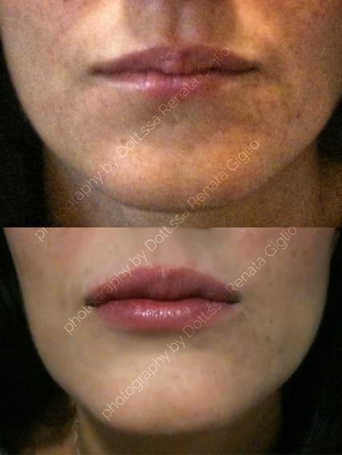
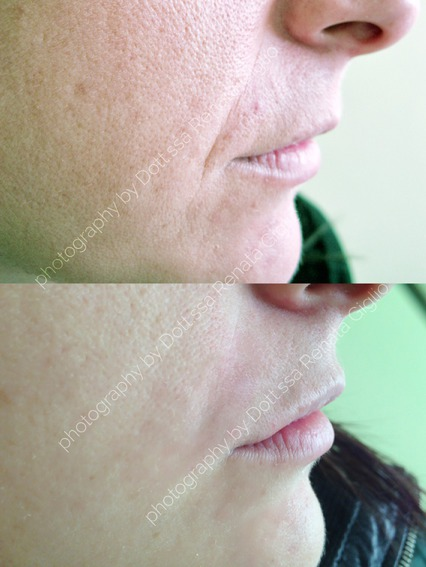
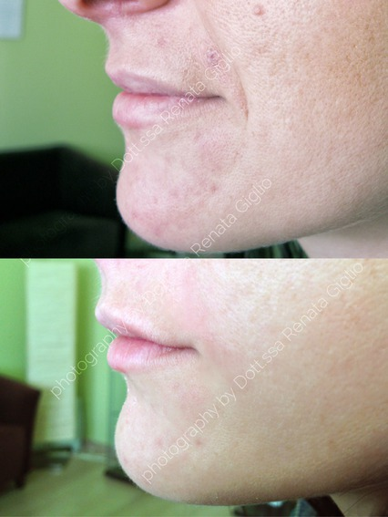
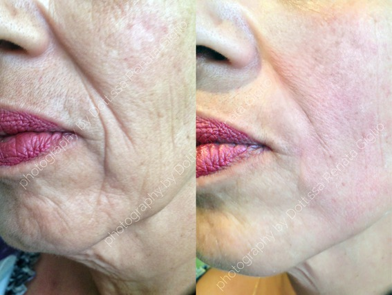
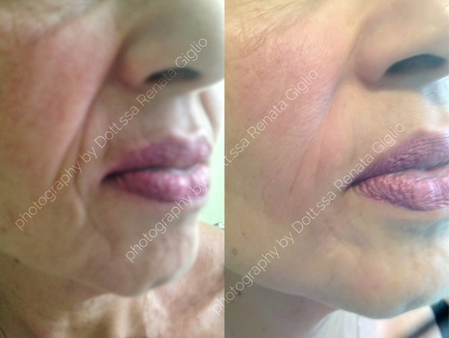
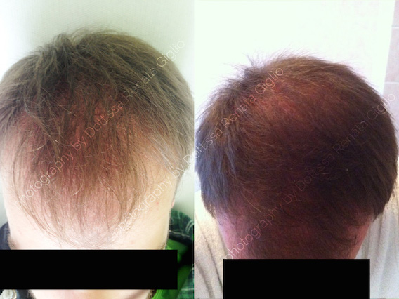
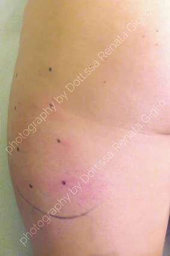
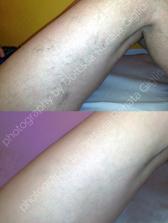

Trattamenti
Filler
Dall’inglese to fill=riempire, si iniettano per correggere e riempire rughe, depressioni, etc... I filler utilizzati sono riassorbibili e biologici. Quelli maggiormente richiesti sono filler di acido ialuronico (utilizzato da più di 20 anni).
Sede dell’impianto superficiale o profonda.
INDICAZIONI:
Aumento labbra, riempimento dei solchi naso-genieni (lati della bocca),ecc.
RISULTATI:






CONTROINDICAZIONI:
Gravidanza e allattamento. Presenza di cicatrici ipertrofiche o cheloidee. Anamnesi positiva per malattie autoimmuni.
DURATA TRATTAMENTO:
20 minuti.
COSTO:
Da 250 €
Botox
Farmaco usato da più di 20 anni in medicina per la cura di spasmi facciali,strabismo, cefalee, iperidrosi(eccessiva sudoraziona) ecc.In medicina estetica viene trattato principalmente il terzo superiore del volto(la parte alta) agendo con un blocco transitorio dei muscoli del distretto trattato, in modo semplice, rapido e con notevoli risultati.Il nostro organismo nei 6 - 12 mesi successivi degraderà l’azione del farmaco.
INDICAZIONI:
Rughe frontali, orbicolari, glabellari.
RISULTATI:
CONTROINDICAZIONI:
Miastenia gravis, allergia al NaCl, recenti trattamenti chirurgici, allergia all’albumina umana,antibiotici (amino glicosidi),gravidanza e allattamento.
EFFETTI INDESIDERATI
Cefalea,ptosi temporanea della palpebra.
DURATA TRATTAMENTO:
20 minuti
COSTO:
Da 350 a 500 €
Carbossiterapia
La somministrazione di CO2 (anidride carbonica) mediante dei piccolissimi aghi (32 G) determina il richiamo immediato di Ossigeno e la riattivazione della circolazione locale lì dove vi è un deficit o una stasi.
INDICAZIONI:
- Adiposità localizzata e/o P.E.F.S.
- Ulcere venose e diabetiche
- BioRivitalizzazioni e tonificazione di viso
- Collo, mani, decolletè
- Alopecia androgenetica
RISULTATI:
L’apparecchio utilizzato è certificato per uso medico di classe II. I pazienti trattati possono beneficiare dei miglioramenti ottenuti già dopo la seconda- terza applicazione.
CONTROINDICAZIONI:
Grave insufficienza cardiaca e/o respiratoria. Gravidanza e allattamento.
DURATA TRATTAMENTO:
15-20 minuti.
COSTO:
80-100 € a seduta.
P.R.P.
Il plasma ricco di piastrine si ottiene mediante un prelievo venoso e successivamente attraverso la centrifugazione del sangue prelevato.
Questa tecnica non invasiva permette di separare le piastrine dagli altri componenti cellulari del sangue. Una volta iniettate le piastrine, queste rilasciano vari fattori di crescita e attivano i fibroblasti della cute.
Tecnica già utilizzata da molti anni in ortopedia, chirurgia plastica, gastroenterologia e per la rigenerazione di diversi tessuti(muscoli, ossa, cute).
INDICAZIONI:
Ringiovanimento viso collo, decolletè, mani; Alopecia androgenetica.
RISULTATI:

CONTROINDICAZIONI:
Nessuna
EFFETTI INDESIDERATI:
Possibile arrossamento, lieve ecchimosi post-trattamento.
DURATA TRATTAMENTO:
30 minuti.
COSTO:
400 €
Peeling
Dall’inglese to peel=spellare. Rappresenta una procedura medica che viene utilizzata per migliorare specifiche condizioni della cute attraverso la rimozione dello strato corneo e la rigenerazione di nuova epidermide. Vengono utilizzati acidi differenti (ac.mandelico, ac.piruvico, ac.salicilico ecc.). La profondità della chemio-esfoliazione può essere da molto superficiale a profondo in base al risultato che dobbiamo ottenere.
INDICAZIONI:
Acne, rosacea, ipercheratosi, macchie, seborrea.
CONTROINDICAZIONI:
Gravidanza e allattamento,tendenza alla formazione di cheloidi.
DURATA TRATTAMENTO:
15-20 minuti.
COSTO:
Da 70 a 150 €
Cavitazione Medica
Consiste in un trattamento non chirurgico e non invasivo. Si riduce lo spessore delle adiposità localizzate attraverso l’utilizzo di ultrasuoni a bassa frequenza. Si ha un rimodellamento corporeo non chirurgico mediante un macchinario realizzato per far “implodere” quindi “scoppiare” le cellule adipose attraverso due differenti manipoli e in base alla loro inclinazione sulla zona da trattare.
INDICAZIONI:
- Adiposità localizzata
- Rimodellamento di zone specifiche grandi (addome, fianchi) e/o piccole (mento, tricipite ecc.)
L’apparecchio utilizzato è certificato per uso medico di classe II. I pazienti trattati possono verificare i miglioramenti ottenuti già dopo la seconda- terza applicazione.
CONTROINDICAZIONI:
Gravidanza e allattamento.
DURATA TRATTAMENTO:
20 minuti.
COSTO:
Da 60-80 € in base alla zona da trattare.
Fosfatidilcolina
E’ un fosfolipide studiato da molto tempo. Rappresentato in natura e introdotto attraverso vari alimenti (tuorlo d’uovo, lecitina di soia). Abbassa il colesterolo e favorisce il lavoro di fegato e cervello. Negli anni 90’ un medico brasiliano intuì che questa sostanza era in grado di sciogliere il grasso. Mediante sottilissimi aghi, in ambulatorio, viene utilizzata questa tecnica per ridurre gli accumuli di grasso nelle varie zone del corpo
INDICAZIONI:
Adiposità localizzata fianchi,coscia,mento,tricipite ecc.
RISULTATI:

CONTROINDICAZIONI:
Allergia all’uovo,gravidanza e allattamento.
DURATA TRATTAMENTO:
15 minuti.
COSTO:
60 €
Mesoterapia
Questa tecnica intradermica, mediante aghi sottili, consente l’introduzione di diverse sostanze in base al trattamento che si vuole effettuare e al problema riscontrato.
Le azioni sono diverse:
lipolitiche,antalgiche,rigenerante ecc.
INDICAZIONI:
Adiposità localizzata, alopecia areata, biostimolazioni per invecchiamento cutaneo,ecc.
CONTROINDICAZIONI:
Diabete mellito, deficit della coagulazione, connettivopatie, allergie alle sostanze utilizzate.
DURATA TRATTAMENTO:
20 minuti.
COSTO:
60 €
Scleroterapia
Per la cura delle varici viene utilizzato un farmaco sclerotico che provoca una reazione infiammatoria della parete venosa inducendo un’obliterazione fibrosa nelle vene.E’ una tecnica ormai utilizzata da tempo e non si provocano lesioni sui tessuti circostanti. Il ritorno venoso risulterà migliorato.
Consiglio prima un eco-color-doppler per valutare la continenza o meno della grosse vene degli arti inferiori e semmai optare,se si vuole, ad un’ecosclerosi guidata (ovvero una chiusura definitiva della vena malata).
INDICAZIONI:
Ectasia(dilatazione) capillare venosa più o meno estesa ed antiestetica
RISULTATI:

EFFETTI INDESIDERATI:
Eritema, tumefazione dolorosa,ecchimosi.
DURATA TRATTAMENTO:
15 minuti.
COSTO:
50-70 € in base alla zona da trattare.